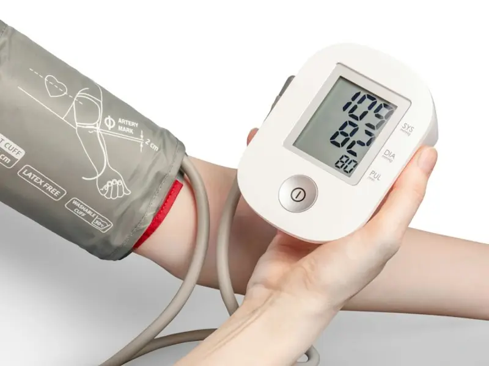
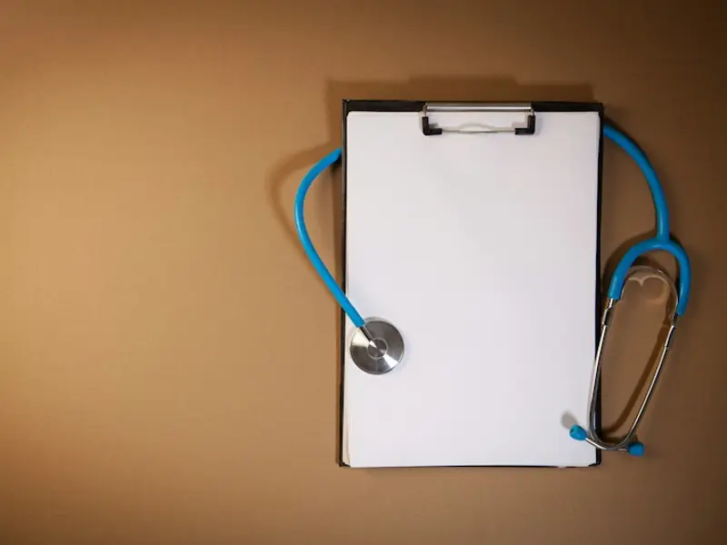
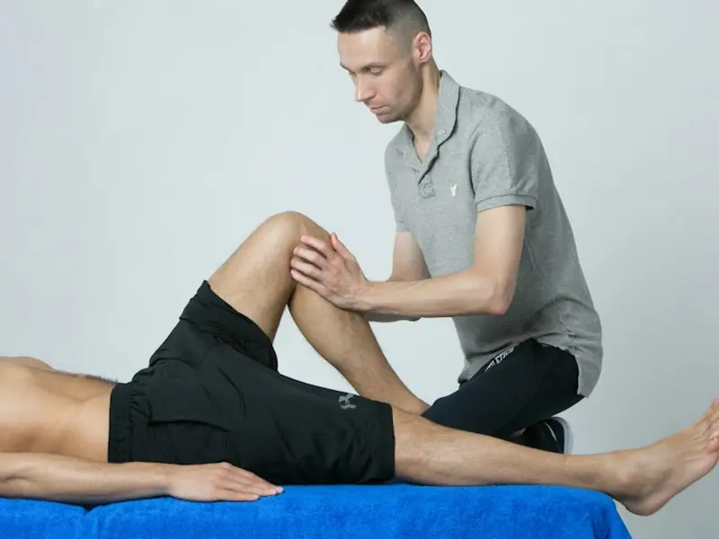

Dr. Guillermo Zeitunlián
Centro Médico Salud Integral
Consultas, estudios cardiológicos, imágenes, laboratorio y rehabilitación en un mismo lugar.
Quiénes somos
Somos un centro médico de atención ambulatoria dirigido por el Dr. Guillermo Zeitunlián. Reunimos clínica médica, cardiología, estudios diagnósticos y rehabilitación para que puedas resolver tus controles de salud sin ir de un lugar a otro.
Nuestro objetivo
Acompañar a cada paciente con una atención cercana y completa: escuchar, estudiar lo necesario y explicar con claridad cada diagnóstico y tratamiento.
Creemos que la prevención y el seguimiento a tiempo son la mejor forma de cuidar la salud.
Servicios de salud
Consultas
- Médico clínico
Consultas generales, chequeos de rutina y seguimiento de presión, diabetes y colesterol.
Pedir turno - Cardiología
Evaluación del corazón y control del riesgo cardiovascular.
Pedir turno - Nutricionista
Plan de alimentación personalizado para tus objetivos y tu salud.
Pedir turno
Corazón y presión

- Electrocardiograma
Registra la actividad eléctrica del corazón. Es rápido e indoloro.
Pedir turno - MAPA
Monitoreo de la presión arterial durante 24 horas mientras hacés tu vida normal.
Pedir turno - Holter
Registro del ritmo cardíaco durante 24 horas con un equipo pequeño y portátil.
Pedir turno
Imágenes y laboratorio
- Ecografías
Estudios por imágenes con ultrasonido, sin radiación.
Pedir turno - Análisis de laboratorio
Extracción y análisis clínicos. Consultanos la preparación antes de venir.
Pedir turno
Aptos y evaluaciones

- Fichas médicas
Aptos físicos para escuela, club, gimnasio o trabajo.
Pedir turno - Valoración prequirúrgica
Evaluación clínica y cardiológica antes de una cirugía.
Pedir turno
Rehabilitación

- Fisioterapia y kinesiología
Tratamiento de lesiones, dolores y recuperación después de una cirugía.
Pedir turno
Prevenir es la mejor forma de cuidar tu salud
Controles a tiempo, estudios en el mismo lugar y un seguimiento cercano de cada paciente.
Ubicación
- Dirección
- Dirección a completar
- Horarios de atención
-
Lunes a viernes 8 a 20 h Sábados 8 a 12 h Domingos y feriados Cerrado
Solicitá tu turno
Escribinos por WhatsApp con el servicio que necesitás y te respondemos con los días disponibles.
Pedir turno por WhatsApp- Contanos qué servicio necesitás
- Indicá tu obra social o si es particular
- Elegí día y horario